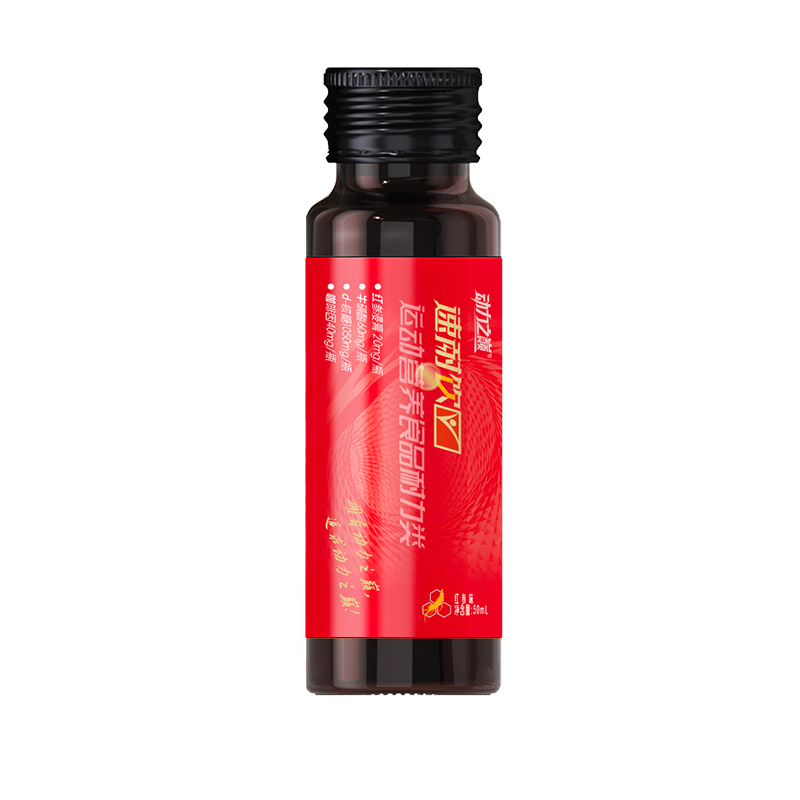
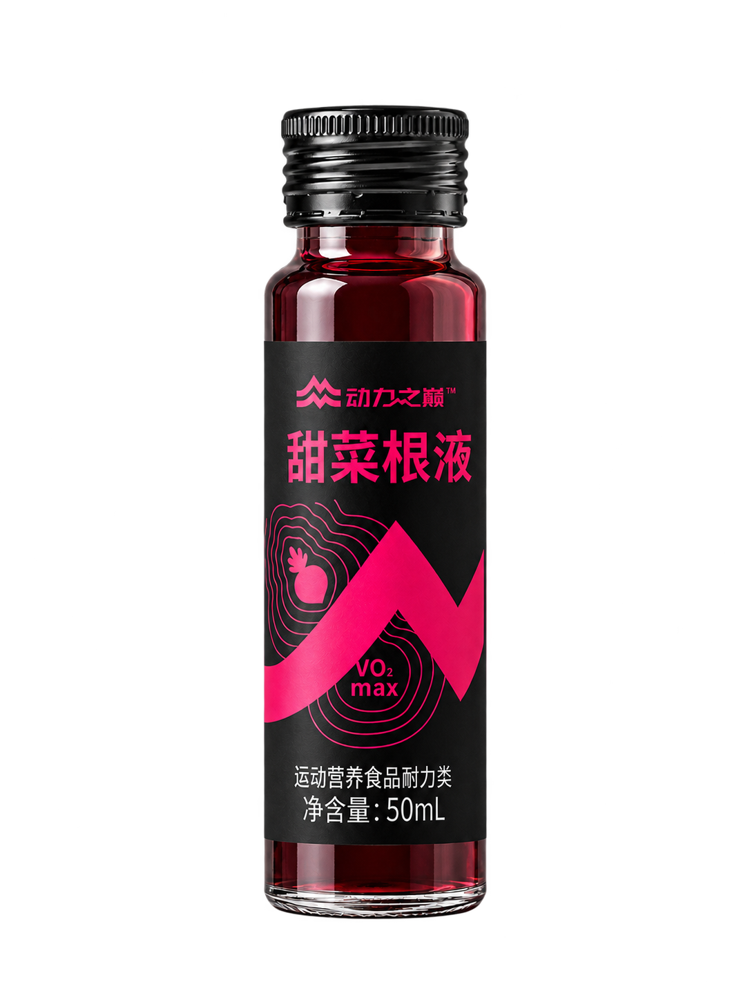

SALES TREND
MOTIONVITA / COMMERCE INTELLIGENCE 11月25日导入 · 文件快照


真实商品 · 全渠道联动分析
01 / SALES OVERVIEW
按付款时间查看 · 2026.09.01 起
向下探索 ↓—
正在读取数据…
正在读取旺店通明细…
CHANNEL CONTRIBUTION
渠道贡献
点击渠道，联动店铺与产品
BEST SELLERS / TOP 3 SPU
每个渠道，谁在带动销售。
渠道与店铺分别看，前三款产品的贡献一眼清楚。
SPU 按营养产品系列归并口味及箱盒规格，套餐使用已拆分单品；按单品支付金额排序，不含包装物料。榜单跟随全局日期和业务类型，支持独立切换渠道／店铺；点击产品查看对应结构。
全部渠道 TOP3 一览
02 / PRODUCT MIX
产品卖了多少，在哪里卖。
点击真实产品图，查看单品、口味与渠道去向。
产品销售占比
按单品支付金额 · 分摊后
STORE PERFORMANCE
点击行切换店铺每家店的销售表现
| 店铺 | 渠道 | 支付金额 | 订单数 | 金额占比 |
|---|
03 / SKU DETAILS
单品与套餐拆分明细
保留原商品编码、规格和系统分摊；箱盒按商品名称折算，赠品包含在发出量中。
| 产品 / 原商品 | 编码 | 单品支付金额 | 折算发出量 | 来自组合装 | 本组占比 |
|---|